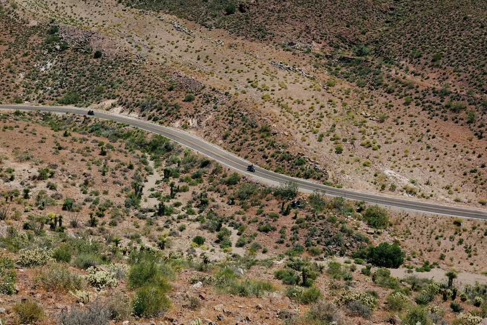
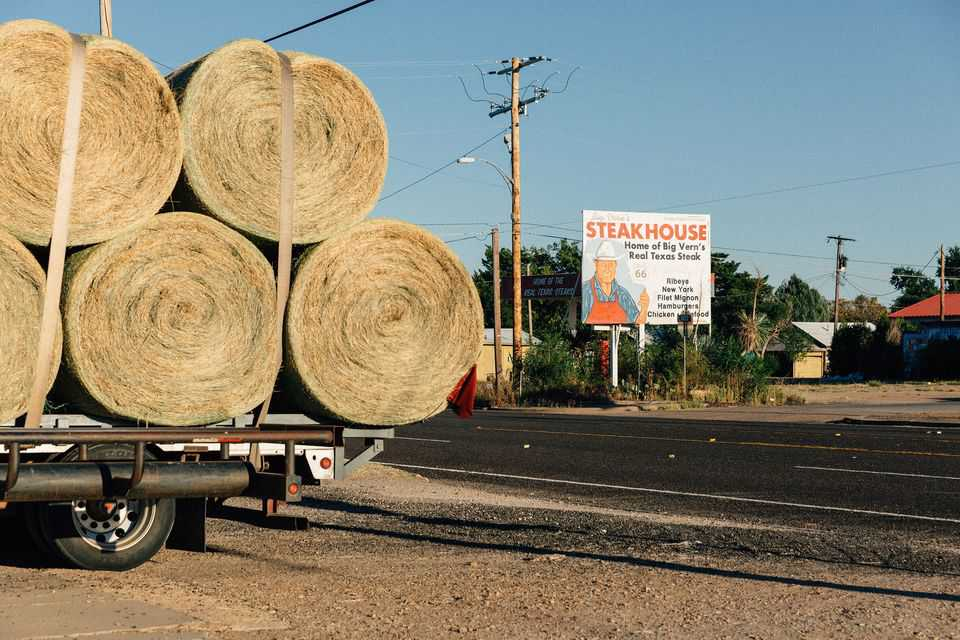
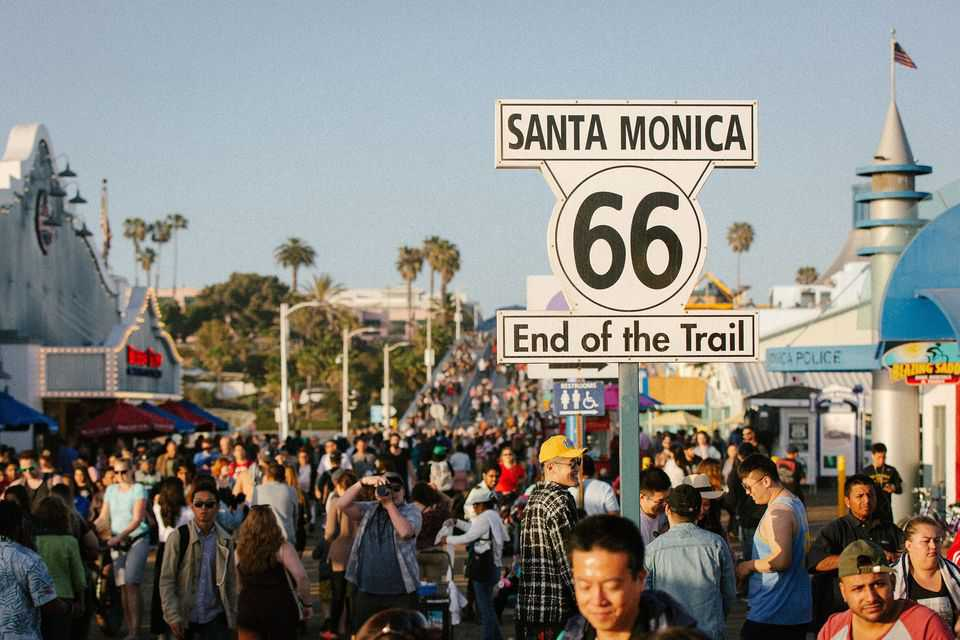

Route 66: How a century-old highway helps explain America
Driving from Chicago to Santa Monica you glimpse the best aspects of the country
July 2nd 2026

The “Mother Road” was what John Steinbeck called it in “The Grapes of Wrath”; the Joads drove west from Oklahoma in search of a better life in California. Nat King Cole sang that it was where you “get your kicks”. It gave its name to a popular network TV show in the 1960s and inspired the plot and setting of Pixar’s “Cars”, an animated film from 2006. It is the path of one of America’s most popular road trips.

Route 66 became the most famous highway in the world partly due to good timing. Its heyday coincided with America’s cultural and geopolitical rise and the emergence of car culture. This year the route turns 100. And though the modern interstate is more efficient, it is far less colourful. America is turning 250 in a divided, uneasy time. The best antidote for the birthday blues is to drive all 2,400 miles (3,860km), from Chicago to Santa Monica, on the Mother Road.
Though it began as a motley stitching of state and local roads—not until 12 years after its inauguration did it become the first fully paved American highway—it quickly became the main route west, passing through eight states. Farmhands used it to flee the Dust Bowl; so did workers, many of them African-Americans from Texas and Oklahoma, who flocked to California’s booming industrial base after the second world war; merry holidaymakers travelled along it to Los Angeles. During Route 66’s early years, more people got behind the wheel, thanks to Henry Ford’s affordable Model T. Services for drivers flourished, including petrol stations, diners and motels, as did the small towns through which the route passed.
But with just a single lane in each direction, the popular route turned into a car park. Dwight Eisenhower, America’s president, had been impressed by Germany’s autobahn while serving in Europe during the second world war. In 1956 he signed the Federal Aid Highway Act to fund a system of multi-lane interstate highways. In the subsequent decades some new highways paralleled Route 66; others simply built over it. As a federal highway it was decommissioned in 1985.


That could have been the end of the story. But grassroots organisations formed to preserve and protect Route 66, in line with the observation of Alexis de Tocqueville from nearly two centuries ago: “Americans…are forever forming associations…at the head of any new undertaking.”
That is the first lesson from Route 66: for all the hands wrung and pixels blazed about the social atomisation wreaked by the digital age, Americans retain their heartening passion for in-person voluntarism. All eight states have volunteer-led groups devoted to preserving and promoting Route 66. Cheerful, garrulous volunteers staff small-town museums and roadside attractions; indeed, the route’s vibrancy largely stems from the efforts of countless people who decided, each for their own reasons, that they want it to remain delightful and not fade into disuse and obscurity.
Bill Thomas, who chairs a national preservation group, the Route 66 Road Ahead Partnership, and is the head of economic development for Logan County, Oklahoma, sees preserving the route as a means to attract tourists. Atlanta, Illinois, a town of just 1,600 residents, claims 8,000 visitors per year. Atlanta’s main attraction is the weird, wonderful American Giants Museum, devoted to enormous fibreglass statues that businesses used to draw customers’ eyeballs and wallets. (Their unfortunate tendency to fall over sparked lawsuits and prompted their retirement.) The museum is an old Texaco petrol station; across the street, a fibreglass giant offers (or is preparing to club passers-by to death with) a hot dog the size of a park bench.
Such roadside oddities abound along the route. There is a motel of painted concrete tepees in Holbrook, Arizona. A little farther down the road is an abandoned mining town reinvented as an open-air museum of the Old West. There are also motorcycle museums, run by lovers of the open road who want to share their passion with the public.
Collectively these attractions provide the second lesson: America’s economy is dynamic and productive, yes, but also intensely creative. American businesses are very good at making customers want to buy things. Advertising, done well, is an art. Though today it is often the province of big, expensive agencies, Route 66 contains hundreds of reminders that it can also be an individual endeavour, requiring little more than a few cans of paint and a memorable name (such as the Blue Swallow and the Wagon Wheel, both motels). Gimmicks work, too: if you finish a 72-ounce steak at the Big Texan Steak Ranch in Amarillo within an hour and without vomiting, your meal is free.


The final lesson is more of a reminder: that mobility helped America boom. People can move to a new city or state to find better opportunities and reinvent themselves. Yet fewer are doing so today. And politicians have grown suspicious of newcomers. The left hates the arrival of new middle-class Americans and wails about gentrification. The right hates the arrival of foreigners and complains about jobs being snapped up. Route 66 symbolises what has really made America great.
All along Route 66 you see that the country may be politically restive and divided, but it remains a warm, fascinating place, filled with at least as many wonders as flaws. Parts of the route—the harrowing mountain passes between Cool Springs and Oatman, Arizona; the sere, striated mountains in New Mexico; the gently rolling flatlands and endless skies of Oklahoma—are breathtakingly beautiful.
Travelling the Mother Road also reminds Americans just how vast and hospitable their country still is. It has a far smaller share of grumps than you would encounter at an average airport. Its very inconvenience is the draw. “Nobody wants to drive 55 miles an hour when they can drive 75” on the interstate, complains one volunteer at a restored petrol station in Shamrock, Texas. People drive on interstates because they have to; they travel Route 66 because they want to.
Mr Thomas recalls how many foreign tourists tell him, “We’re travelling Route 66 to see the ‘real America’.” And though of course Adrian, Texas, and Pontiac, Illinois, are no more “real” than Queens or Boston, road trips help you feel you are journeying to a deeper understanding of the nation.
Outside a café in Adrian, at the road’s midpoint, a burly Frenchman called Vince looks out at the road he has just travelled and the one he is about to discover. Asked what drew him to a decommissioned highway in the middle of nowhere, he smiles and gestures towards his motorcycle: “For me, it’s been a dream for a long time. And now, it’s reality.” ■
For more on the latest books, films, TV shows, albums and controversies, sign up to Plot Twist, our weekly subscriber-only newsletter